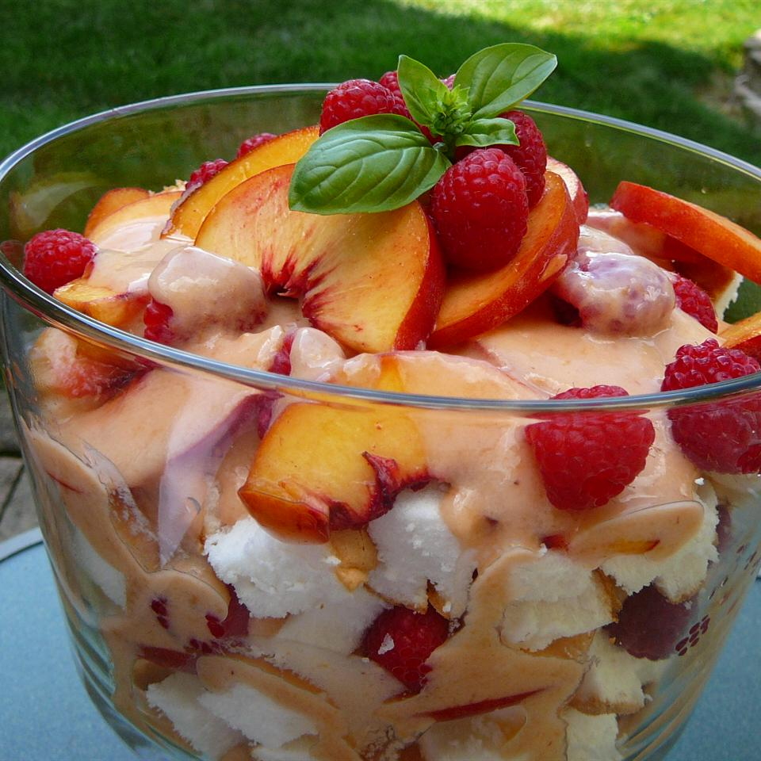

Fresh Peach Trifle

Description
This dessert is one of my favorites. Although you have to put a little work into it, the results can be described with one word: Yummy!
Ingredients
- 6 large ripe peaches - peeled, pited, and sliced
- 1 tablespoon fresh lemon juice
- 16 ounces vanilla yogurt
- 1 teaspoon lemon zest
- 1 (10 inch) prepared angel food cake
Directions
- Place peaches in large bowl and gently toss with lemon juice
- Place 1 cup of peaches in a blender, set aside remaining slices, and blend until smooth
- Place yogurt into a bowl; stir in the peach puree and lemon zest until well blended
- Cut the angel food cake into squares and place half in the bottom of a glass dish
- Spoon half of the peach slices over the cake
- Cover with half of the yogurt mixture and place remaining cake squares over the yogurt
- Top with peaches, reserving 5 or 6 slices for garnish
- Cover with remaining yogurt mixture and garnish with peach slices
- Refrigerate until ready to serve
Return to main page